# Archivos descargados de cf.10xgenomics.com:
# 1. HumanColonCancer_Flex_Multiplex_count_filtered_feature_bc_matrix.tar.gz
# 2. HumanColonCancer_Flex_Multiplex_count_analysis.tar.gz
# Después de descomprimir:
# filtered_feature_bc_matrix/ ← matriz de conteo (MTX)
# ├── barcodes.tsv.gz (278,610 barcodes con sufijo -1 a -32)
# ├── features.tsv.gz
# └── matrix.mtx.gz
# analysis/
# └── umap/gene_expression_2_components/projection.csvClase 4: Deconvolución e Integración con scRNA-seq
Taller de Transcriptómica Espacial
2026-05-20
Resumen: ¿Dónde estamos?
Clases anteriores:
- Clase 1: Teoría de tecnologías espaciales
- Clase 2: FASTQs → Space Ranger → Matriz de conteo → QC, clustering, genes espacialmente variables (Seurat + Banksy)
- Clase 3: Tecnologías espaciales basadas en microscopía (MERFISH)
Hoy:
- Procesamiento del atlas scRNA-seq (Chromium Flex)
- Anotación automatizada con Azimuth
- Deconvolución de Visium HD con spacexr/RCTD
- Integración con datos Xenium ??
Pregunta central:Clusters espaciales en Visium HD (Banksy) vs ¿qué tipos celulares son?
Necesitamos una referencia anotada.
El diseño experimental del estudio
Del mismo bloque FFPE se generaron secciones seriadas para múltiples plataformas:
| Plataforma | Resolución | Cobertura | Pacientes |
|---|---|---|---|
| Visium HD | 2–16 µm bins | Transcriptoma completo | P1, P2, P5 CRC |
| Chromium Flex | Unicelular | Transcriptoma completo | 5 CRC + 3 NAT |
| Xenium | Subcelular | ~500 genes (panel) | P1, P2, P4, P5 CRC |
Al usar secciones seriadas, los tipos celulares en el scRNA-seq representan fielmente lo que está en el tejido espacial.
Chromium Flex: ¿Qué es?
Diferencias con Chromium 3’/5’:
- Basado en sondas (como Visium HD), no poly-dT
- Compatible con FFPE: mismo tejido que el espacial
- Permite multiplexeo: múltiples muestras en un mismo GEM well
- Probe barcodes (BC001–BC004) identifican cada muestra
Estructura del multiplexeo:
| Pool | Muestras |
|---|---|
| Pool 1 (L1–L4) | P2CRC, P4CRC |
| Pool 2 (L1–L4) | P1CRC, P3CRC, P5CRC, P2NAT |
| Pool 3 (L1–L4) | P5NAT, P3NAT |
8 muestras × 4 librerías técnicas = 32 combinaciones
Cell Ranger multi demultiplexa por probe barcode, luego aggr combina todo en una sola matriz con sufijos -1 a -32.
Aunque el flex parece más de todas sus tecnologías 💪
Datos descargados de 10x Genomics
Scripts por si es de su interés FlexSingleCell.R ejecutado con slurm script
¿Por qué MTX y no H5?
Porque lo hice en Ken y requiere hdf5r, que a su vez necesita la librería del sistema HDF5 correctamente configurada. En nuestro cluster, la instalación de HDF5 tenía un path roto. El formato MTX (Matrix Market) se lee con Read10X() sin dependencias adicionales.
Cargando los datos y asignando pacientes
# El sufijo del barcode (-1 a -32) indica la muestra
# Orden determinado por cellranger aggr
sample_map <- data.frame(
suffix = 1:32,
patient = c(
"P2CRC","P4CRC","P2CRC","P4CRC","P2CRC","P4CRC","P2CRC","P4CRC",
"P1CRC","P3CRC","P5CRC","P2NAT","P1CRC","P3CRC","P5CRC","P2NAT",
"P1CRC","P3CRC","P5CRC","P2NAT","P1CRC","P3CRC","P5CRC","P2NAT",
"P5NAT","P3NAT","P5NAT","P3NAT","P5NAT","P3NAT","P5NAT","P3NAT"),
tissue = c(
"CRC","CRC","CRC","CRC","CRC","CRC","CRC","CRC",
"CRC","CRC","CRC","NAT","CRC","CRC","CRC","NAT",
"CRC","CRC","CRC","NAT","CRC","CRC","CRC","NAT",
"NAT","NAT","NAT","NAT","NAT","NAT","NAT","NAT")
)
barcode_suffix <- as.numeric(gsub(".*-(\\d+)$", "\\1", colnames(flex_counts)))
flex <- CreateSeuratObject(counts = flex_counts, project = "ColonCancer_Flex", min.cells = 3)
flex$patient <- sample_map$patient[barcode_suffix]
flex$tissue <- sample_map$tissue[barcode_suffix]UMAP de Cell Ranger: ¿Pacientes separados?
Code
# Cell Ranger calcula un UMAP durante el pipeline aggr
umap_cr <- read.csv("flex_scrna/analysis/umap/gene_expression_2_components/projection.csv")
rownames(umap_cr) <- umap_cr$Barcode
umap_cr <- umap_cr[colnames(flex), ]
flex[["umap"]] <- CreateDimReducObject(
embeddings = as.matrix(umap_cr[, c("UMAP.1", "UMAP.2")]),
key = "UMAP_", assay = "RNA"
)
DimPlot(flex, group.by = "patient", reduction = "umap", pt.size = 1)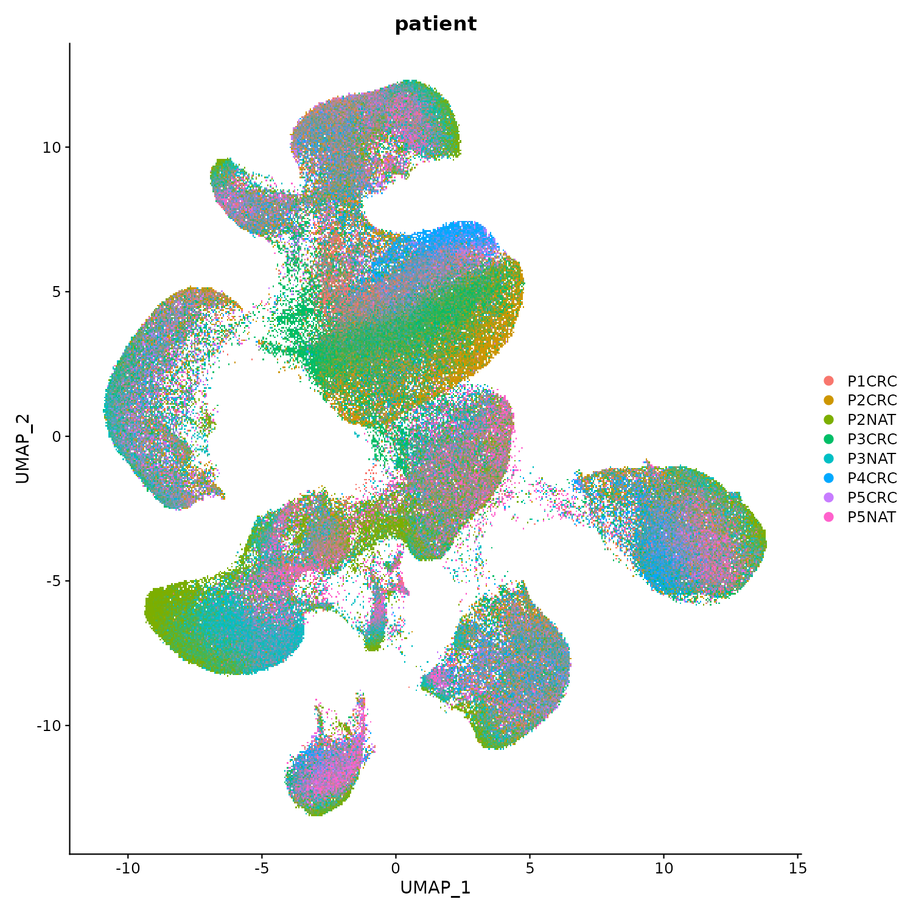
Control de calidad y filtrado
flex[["MT.percent"]] <- PercentageFeatureSet(flex, pattern = "^MT-")
# Umbrales: percentiles 2.5% y 97.5% + MT < 25%
UMI_TH <- quantile(flex$nCount_RNA, c(0.025, 0.975))
Gene_TH <- quantile(flex$nFeature_RNA, c(0.025, 0.975))
flex <- subset(flex,
MT.percent < 25 &
nCount_RNA > UMI_TH[1] & nCount_RNA < UMI_TH[2] &
nFeature_RNA > Gene_TH[1] & nFeature_RNA < Gene_TH[2]
)
cat("Cells after QC:", ncol(flex), "\n")La estrategia de filtrado es idéntica a la del artículo original: remover el 2.5% extremo en UMIs y genes, más un umbral de 25% para genes mitocondriales.
Procesamiento estándar con Seurat

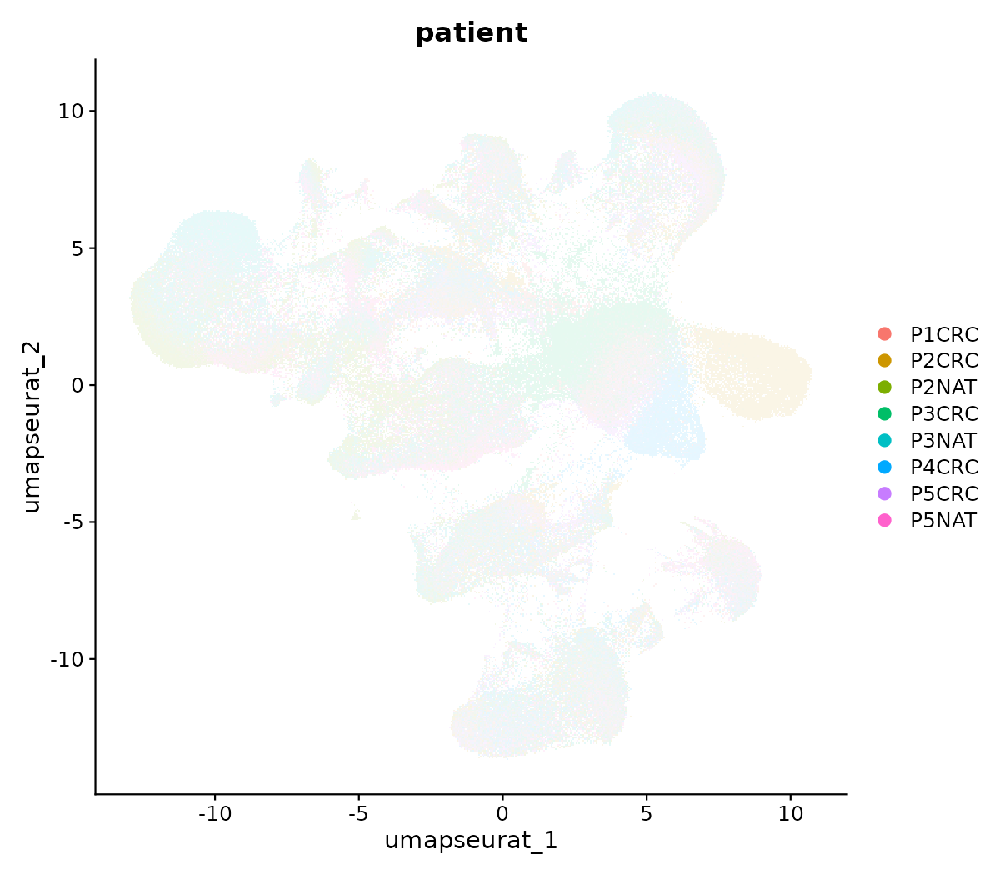
Anotación automatizada con Azimuth
Azimuth es un servicio de anotación automatizada basado en transferencia de etiquetas desde un atlas de referencia pre-anotado.
¿Cómo funciona?
- Tu objeto Seurat se envía al servicio en la nube
- Se proyecta sobre una referencia (Human Colon)
- Regresa con etiquetas de tipo celular + scores de confianza
Niveles de anotación:
azimuth_broad→ categorías amplias (Immune, Epithelial, Stromal)azimuth_medium→ subdivisiones (T cell, B cell, Macrophage)azimuth_fine→ tipos específicos (CD8+ TRM, Goblet, CAF)azimuth_label→ más detallado
Resultado de Azimuth: anotación fina
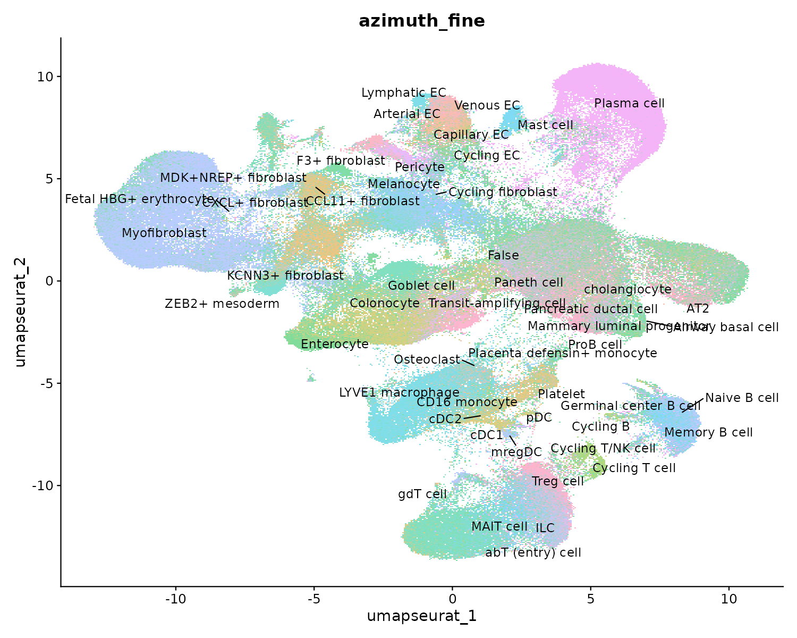
Resultado de Azimuth: anotación amplia
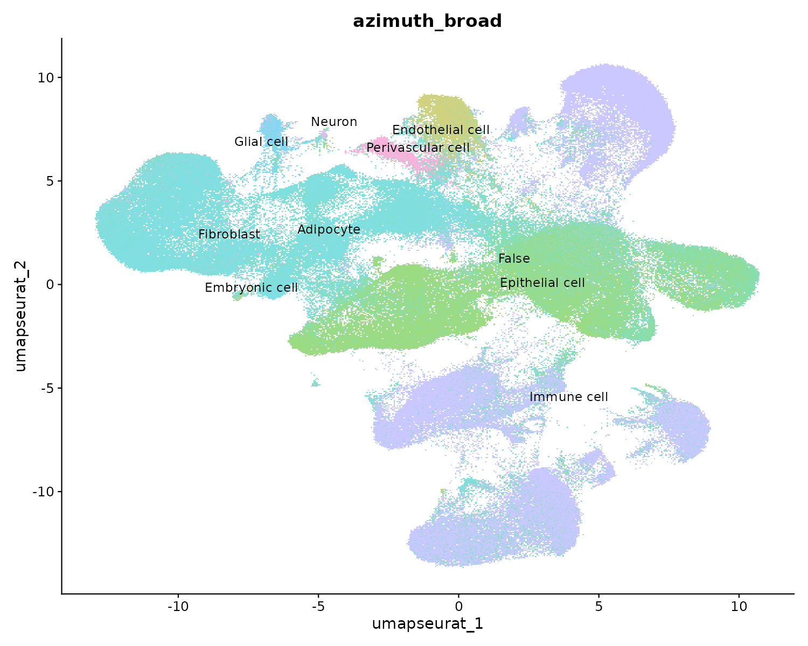
Validación con marcadores canónicos
Code
lineage_markers <- c(
"EPCAM","KRT8","KRT20","PIGR", "LGR5", # epitelial
"CEACAM5","CEACAM6","MUC2", # tumor / goblet
"CD3D","CD3E","CD8A","CD4","FOXP3", # T cells
"NKG7","GNLY", # NK
"MS4A1","CD79A","JCHAIN","MZB1", # B / plasma
"CD68","CD163","CSF1R","LYZ","S100A8", # mieloides
"COL1A1","DCN","LUM", # fibroblastos
"PECAM1","VWF","CDH5", # endotelial
"ACTA2","DES","MYH11" # músculo liso
)DotPlot: marcadores vs. tipos celulares
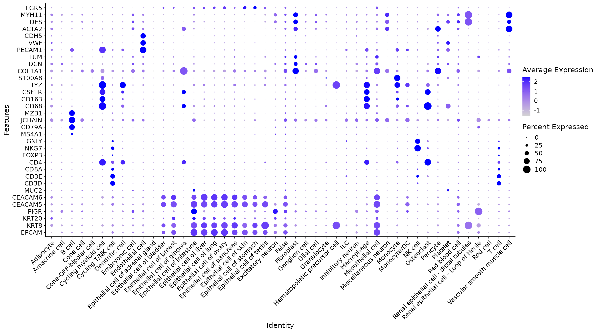
FeaturePlot: expresión de marcadores en UMAP

Confianza de la anotación
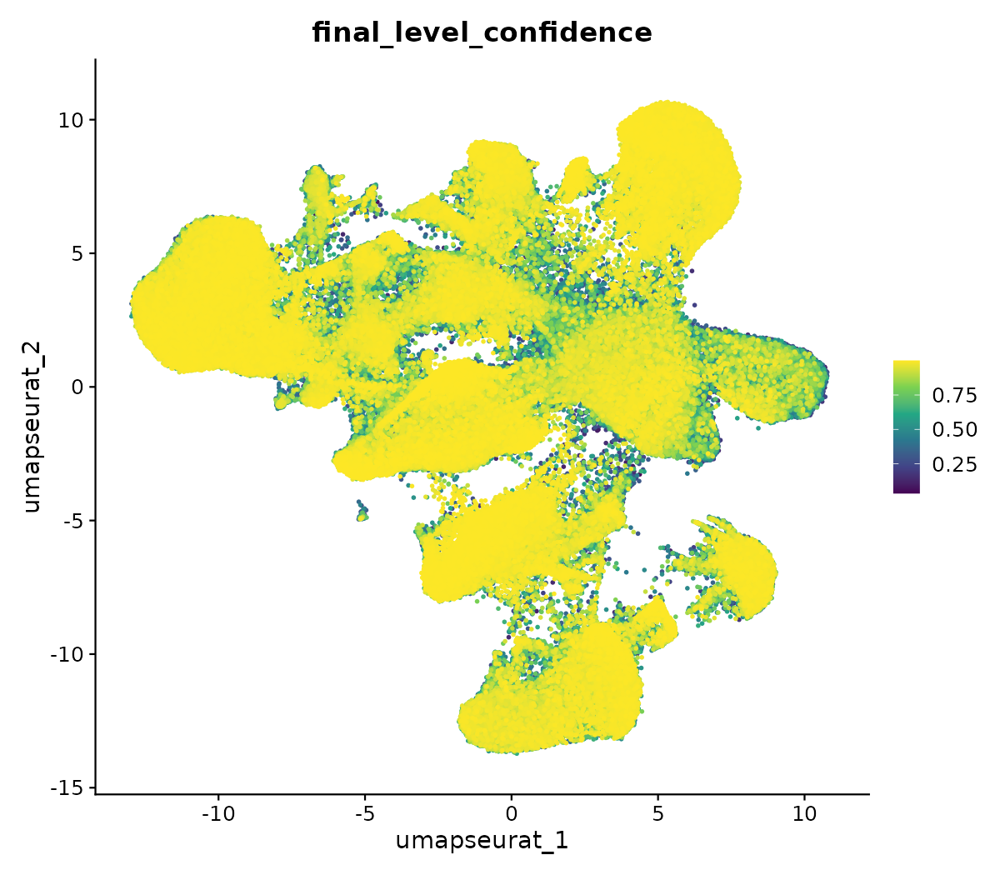
El final_level_confidence indica qué tan segura es la asignación:
- > 0.8: alta confianza
- 0.5–0.8: aceptable
- < 0.5: revisar manualmente
Las células con baja confianza suelen estar en:
- Transiciones entre tipos
- Tipos no representados en la referencia
- Doublets / baja calidad
Cluster vs. tipo celular predicho
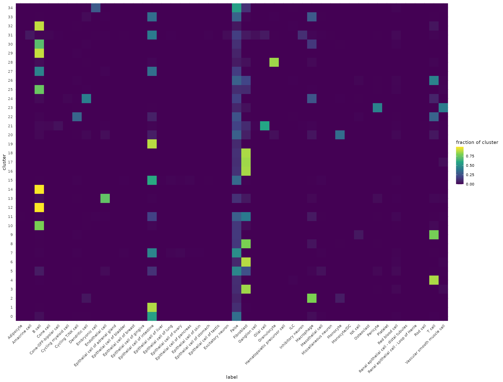
Cada fila es un cluster de Seurat, cada columna un tipo celular predicho por Azimuth. Si un cluster tiene una sola columna dominante, la anotación es consistente.
El objeto anotado: flex_annotated.rds
#saveRDS(flex, "flex_scrna/flex_annotated.rds")
# Para cargarlo en la clase:
flex <- readRDS("flex_scrna/flex_annotated.rds")
# Contiene:
# - Matriz de conteo normalizada (278K → ~250K tras QC)
# - Metadatos: patient, tissue, library
# - Anotaciones: azimuth_broad, azimuth_medium, azimuth_fine, azimuth_label
# - UMAP de Cell Ranger + UMAP de Seurat
# - Clusters de Seurat (resolution 0.6)Punto de partida
Les entrego flex_annotated.rds con todo lo anterior ya procesado. A partir de aquí, lo usaremos como referencia para deconvolucionar los datos de Visium HD.
¿Qué es la deconvolución espacial?
Cada bin de Visium HD (8 µm) puede contener 1–2 células. El perfil de expresión del bin es una mezcla de los tipos celulares presentes.
Deconvolución = estimar la composición de tipos celulares por bin, usando el atlas scRNA-seq como referencia.
Herramienta: spacexr / RCTD
- Robust Cell Type Decomposition
- Modelo probabilístico que estima proporciones
- Modo
doublet: asume máximo 2 tipos por bin (ideal para 8 µm)
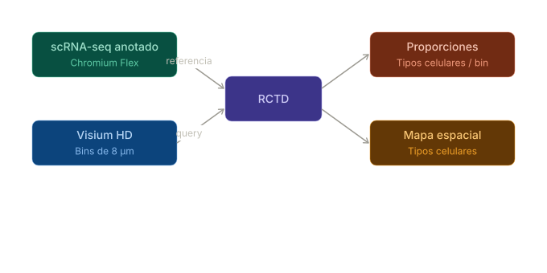
Instalando spacexr con aceleración para Visium HD
El artículo incluye un PR con mejoras de velocidad específicas para datos de alta definición (modo doublet):
- Paralelización con
foreach+doParallelen lugar demakeClusters - Vectorización de
gather_results(cuello de botella original) - Barra de progreso para monitorear el avance
Nota
Esta rama solo acelera el modo doublet. Los modos full y multi no están optimizados todavía. Sinceramente no vi un gran cambio, y en la laptop no corrió por un bug.
Preparando la referencia para RCTD
library(spacexr)
# Cargar el atlas anotado
flex <- readRDS("flex_annotated.rds")
VlnPlot(flex, features = c("CEACAM5", "CEACAM6"),
group.by = "azimuth_fine", pt.size = 0) +
coord_flip()
# Relabel: epithelial cells with high CEACAM5/6 that are patient-specific → Tumor
flex$cell_type_final <- as.character(flex$azimuth_medium)
# Identify which cells express tumor markers
tumor_cells <- colnames(flex)[
FetchData(flex, "CEACAM5")[,1] > 1 &
flex$azimuth_medium %in% c("Epithelial cell of intestine", "Goblet cell")
]
flex$cell_type_final[colnames(flex) %in% tumor_cells] <- "Tumor"
table(flex$cell_type_final) |> sort(decreasing = TRUE)
# Filtrar solo el paciente que corresponde al Visium HD
# (ej. P1CRC si tu Visium HD es P1CRC)
flex_patient <- subset(flex, patient == "P1CRC")
# Remove cells with "False" or NA annotations
valid_cells <- colnames(flex_patient)[
!is.na(flex_patient$cell_type_final) &
flex_patient$cell_type_final != "False"
]
flex_patient <- subset(flex_patient, cells = valid_cells)
# Extraer counts y etiquetas
counts_sc <- GetAssayData(flex_patient, layer = "counts")
cell_types <- flex_patient$cell_type_final
cell_types <- as.factor(gsub("/", "_", flex_patient$cell_type_final))
names(cell_types) <- colnames(flex_patient)
cell_types <- droplevels(cell_types)
ct_counts <- table(cell_types)
keep_types <- names(ct_counts[ct_counts >= 25])
keep_cells <- names(cell_types)[cell_types %in% keep_types]
counts_sc <- counts_sc[, keep_cells]
cell_types <- droplevels(cell_types[keep_cells])
cat("Removed", length(ct_counts) - length(keep_types), "rare cell types\n")
cat("Remaining:", length(keep_types), "cell types,", length(cell_types), "cells\n")
# Crear objeto Reference de spacexr
reference <- Reference(
counts = counts_sc,
cell_types = as.factor(cell_types)
)Cargando y preparando los datos espaciales para RCTD
Code
#En ken, que no tiene hdf5r pero sí RAM
counts <- Read10X(
"/mnt/data/transcriptomica/jmiranda/sra_visium_hd/P1CRC_GSM8594567_results/outs/binned_outputs/square_016um/filtered_feature_bc_matrix/"
)
visium <- CreateSeuratObject(counts = counts, assay = "Spatial")
library(arrow)
positions <- read_parquet(
"/mnt/data/transcriptomica/jmiranda/sra_visium_hd/P1CRC_GSM8594567_results/outs/binned_outputs/square_016um/spatial/tissue_positions.parquet"
)
# Match to barcodes in the object
rownames(positions) <- positions$barcode
positions <- positions[colnames(visium), ]
visium$spatial_row <- positions$pxl_row_in_fullres
visium$spatial_col <- positions$pxl_col_in_fullres
coords <- data.frame(
x = visium$spatial_col,
y = visium$spatial_row,
row.names = colnames(visium)
)Code
# Cargar el objeto Visium HD procesado
visium <- Load10X_Spatial(
data.dir = "/mnt/data/transcriptomica/jmiranda/sra_visium_hd/P1CRC_GSM8594567_results/outs",
#En laptop y con HDF5R
bin.size = 16
)
#Si viene de geo, especificar nombre de archivos
#visium <- Load10X_Spatial(data.dir = "P1CRC_GSM8594567_results/outs/binned_outputs/square_016um", filename = "filtered_feature_bc_matrix.h5", image.name = "tissue_lowres_image.png")
# Extraer counts y coordenadas
coords <- GetTissueCoordinates(visium)Subsetting opcional para que no tarde tanto
Code
count.plot <- SpatialFeaturePlot(object, features = "nCount_Spatial") +
theme(legend.position = "right")
# Extract everything we need
plot_data <- ggplot_build(count.plot)$data[[1]]
x_cuts <- seq(min(plot_data$x), max(plot_data$x), length.out = 9)
y_cuts <- seq(min(plot_data$y), max(plot_data$y), length.out = 9)
ggplot(plot_data, aes(x = x, y = y, color = fill)) +
geom_point(size = 0.1, shape = 15) +
scale_color_identity() +
# Grid
annotate("segment",
x = x_cuts, xend = x_cuts,
y = min(plot_data$y), yend = max(plot_data$y),
color = "white", linewidth = 0.3, linetype = "dashed") +
annotate("segment",
x = min(plot_data$x), xend = max(plot_data$x),
y = y_cuts, yend = y_cuts,
color = "white", linewidth = 0.3, linetype = "dashed") +
# Column labels
annotate("text",
x = head(x_cuts, -1) + diff(x_cuts) / 2,
y = rep(max(plot_data$y) + 5, 8),
label = 1:8, color = "yellow", size = 3, fontface = "bold") +
# Row labels
annotate("text",
x = rep(min(plot_data$x) - 5, 8),
y = head(y_cuts, -1) + diff(y_cuts) / 2,
label = LETTERS[1:8], color = "yellow", size = 3, fontface = "bold") +
coord_fixed(clip = "off") +
theme_void() +
theme(legend.position = "none",
plot.background = element_rect(fill = "black", color = NA))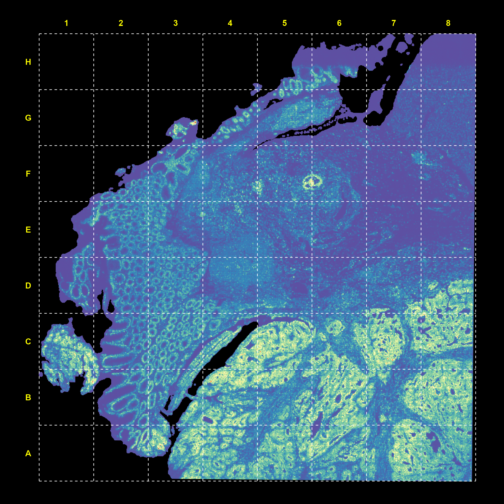
Elijan un bloque (o no, pero tardará más)
plot_data$cell <- colnames(object)
# Function to pick a block
pick_block <- function(row_letter, col_number, plot_data, x_cuts, y_cuts) {
r <- match(toupper(row_letter), LETTERS)
c <- col_number
cells <- plot_data$cell[
plot_data$x >= x_cuts[c] & plot_data$x < x_cuts[c + 1] &
plot_data$y >= y_cuts[r] & plot_data$y < y_cuts[r + 1]
]
return(cells)
}
#
cells_block <- pick_block("C", 1, plot_data, x_cuts, y_cuts)
object <- subset(object, cells = cells_block)
#cat("Bins in block D3:", ncol(object_block), "\n")
SpatialFeaturePlot(object, features = "nCount_Spatial", pt.size.factor = 20)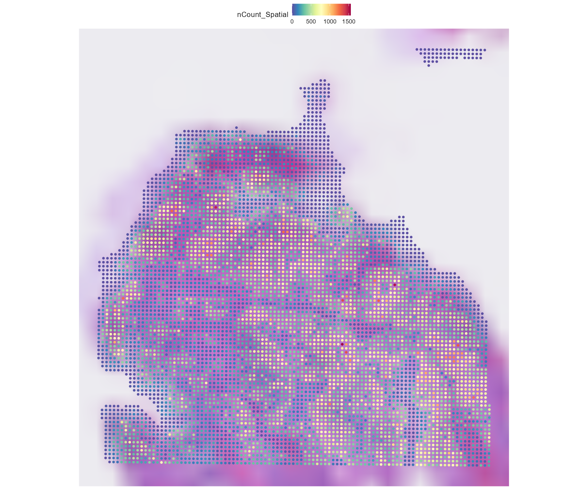
Corriendo deconvolucion
# Crear objeto SpatialRNA de spacexr
counts_spatial <- GetAssayData(visium, layer = "counts")
spatial_rna <- SpatialRNA(
coords = coords,
counts = counts_spatial
)
# Crear y ejecutar RCTD
rctd <- create.RCTD(spatial_rna, reference, max_cores = 30)
rctd <- run.RCTD(rctd, doublet_mode = "doublet")
# doublet_mode: máximo 2 tipos por bin (apropiado para 8 µm)
saveRDS(rctd, "resultsRCTD_P1CRC.rds")Visualizando la deconvolución
Code
# Extraer los resultados
rctd <- readRDS("resultsRCTD_P1CRC.rds")
results <- rctd@results
# Para modo doublet: tipo celular 1 y 2 por bin + proporciones
cell_type_1 <- results$results_df$first_type
#weirdly stored as scond_type (sic)
cell_type_2 <- results$results_df$scond_type
visium$rctd_class <- results$results_df$spot_class
visium$rctd_weight1 <- results$weights_doublet[, "first_type"]
# Agregar al objeto Seurat
visium$rctd_type1 <- cell_type_1
visium$rctd_type2 <- cell_type_2
# Visualizar el tipo celular dominante
coords <- data.frame(
x = visium$spatial_col,
y = visium$spatial_row,
type = visium$rctd_type1,
class = visium$rctd_class
)
coords_good <- coords[coords$class != "reject", ]
p <- ggplot(coords_good, aes(x = x, y = -y, color = type)) +
geom_point(size = 0.1, shape = 15) +
coord_fixed() +
theme_minimal() +
theme(axis.title = element_blank(), axis.text = element_blank()) +
guides(color = guide_legend(override.aes = list(size = 3))) +
labs(title = "RCTD deconvolution — dominant cell type")
ggsave("rctd_spatial_celltypes.png", p, width = 12, height = 10, dpi = 150)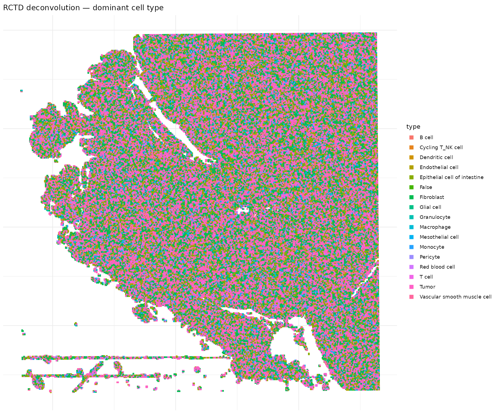
O por paneles
Code
library(patchwork)
weights <- as.data.frame(results$weights)
colnames(weights) <- gsub(" ", "_", colnames(weights)) # spaces break metadata
for (ct in colnames(weights)) {
visium[[ct]] <- weights[[ct]]
}
# Plot helper using your spatial coords
plot_weight <- function(obj, feature) {
df <- data.frame(
x = obj$spatial_col,
y = obj$spatial_row,
val = obj[[feature, drop = TRUE]]
)
ggplot(df, aes(x = x, y = -y, color = val)) +
geom_point(size = 0.3, shape = 15) +
coord_fixed() +
labs(title = feature, color = NULL) +
theme_void() +
theme(plot.title = element_text(size = 9, hjust = 0.5))
}
ct_names <- colnames(weights)
p <- lapply(ct_names, \(ct) plot_weight(visium, ct)) |>
wrap_plots(nrow = 2, guides = "collect") &
scale_color_gradientn(colors = rev(hcl.colors(9, "Rocket"))) &
theme(
legend.key.width = unit(0.5, "lines"),
legend.key.height = unit(1, "lines")
)
ggsave("rctd_all_weights_panels.png", p, width = 20, height = 10, dpi = 150)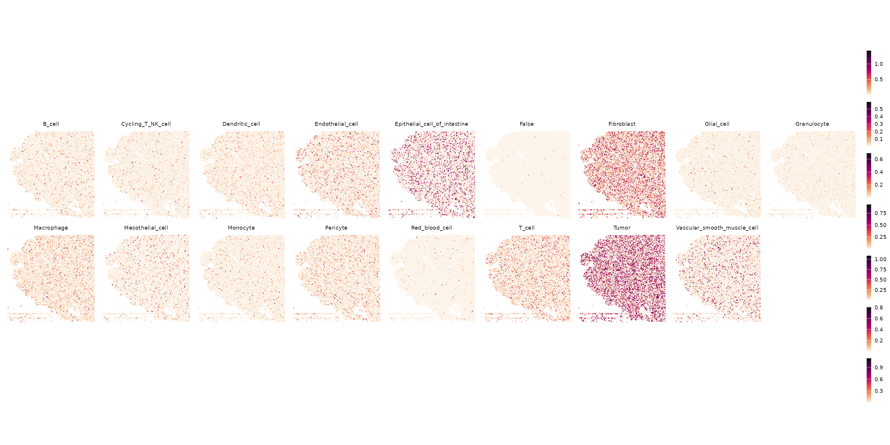
Igual que hace dos clases usamos Banksy (clustering spatial aware)
Transformar seurat a spatial exp
Code
library(SpatialExperiment)
coords <- GetTissueCoordinates(visium)
object_export <- visium
sce <- as.SingleCellExperiment(object_export)
spe <- SpatialExperiment(
assays = assays(sce),
colData = colData(sce),
spatialCoords = as.matrix(coords[colnames(sce), 1:2])
)
#Quitar los ceros
spe <- spe[, colSums(counts(spe)) > 0]Code
library(Banksy)
library(scuttle)
library(scran)
spe <- logNormCounts(spe)
dec <- modelGeneVar(spe)
hvg <- getTopHVGs(dec, n=3e3)
# set seed for random number generation
# in order to make results reproducible
set.seed(112358)
# 'Banksy' parameter settings
k <- 8 # consider first order neighbors
l <- 0.2 # use little spatial information
a <- "logcounts"
xy <- c("array_row", "array_col")
# restrict to selected features
tmp <- spe[hvg, ]
# compute spatially aware 'Banksy' PCs
tmp <- computeBanksy(tmp, assay_name=a, coord_names=xy, k_geom=k)
tmp <- runBanksyPCA(tmp, lambda=l, npcs=20)
reducedDim(spe, "PCA") <- reducedDim(tmp)
## run UMAP (for visualization purposes only)
# .vhd16 <- runUMAP(.vhd16, dimred="PCA")
# build cellular shared nearest-neighbor (SNN) graph
g <- buildSNNGraph(spe, use.dimred="PCA", type="jaccard", k=20)
# cluster using Leiden community detection algorithm
k <- cluster_leiden(g, objective_function="modularity", resolution=2.5)
table(spe$Banksy <- factor(k$membership))
spe$in_tissue <- TRUE
plotCoords(spe, annotate = "Banksy", point_size = 2, point_shape = 15)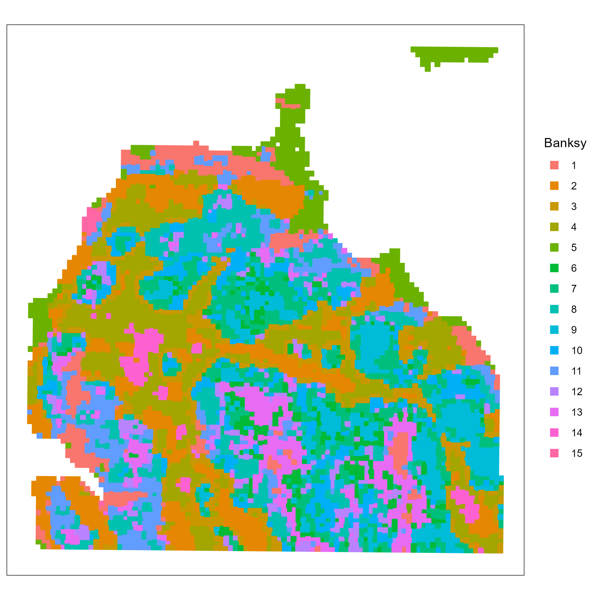
Comparar deconvolución con Banksy
Code
# Get common barcodes (strip -1 suffix if needed)
barcodes_spe <- colnames(spe)
barcodes_seurat <- colnames(visium)
common <- intersect(barcodes_spe, barcodes_seurat)
cat("Common barcodes:", length(common), "\n")
# If 0, check if one has -1 suffix and the other doesn't
# head(barcodes_spe); head(barcodes_seurat)
# Build the cross-table
banksy <- spe$Banksy[match(common, colnames(spe))]
decon <- visium$rctd_type1[match(common, colnames(visium))]
fq <- prop.table(table(banksy, decon), 1)
pheatmap(fq[,-c(5)], cellwidth = 10, cellheight = 10,
treeheight_row = 5, treeheight_col = 5)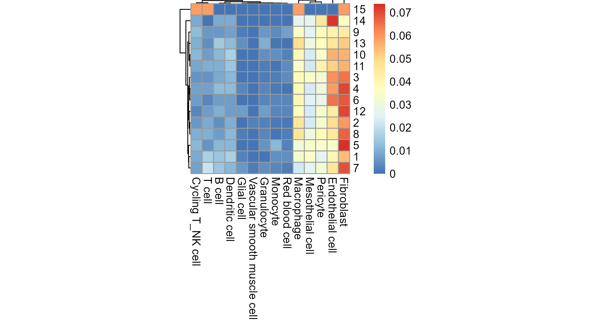
Xenium: validación ortogonal
¿Por qué Xenium?
- Resolución subcelular real (no bins)
- Detección in situ de transcritos individuales
- Panel de ~500 genes seleccionados
Complementa a Visium HD:
- Visium HD: transcriptoma completo, resolución bin
- Xenium: panel limitado, resolución subcelular
Los autores encontraron genes como SELENOP y JCHAIN que no estaban en el panel Xenium original, pero fueron identificados como relevantes gracias a Visium HD → los añadieron como panel Add-on.
# Los datos Xenium se descargaron
# de GEO (GSE280314)
# Contienen:
# - transcripts.csv.gz
# - cells.csv.gz
# - cell_feature_matrix/
# - cell_boundaries/
# Cargar en Seurat:
library(arrow)
# Load transcript-level data
tx <- read_parquet("xenium_data/P1CRC_xenium/transcripts.parquet")
head(tx)
# Should have: x_location, y_location, feature_name, cell_id, etc.
# Load the cell feature matrix (already extracted)
counts <- Read10X("xenium_data/P1CRC_xenium/cell_feature_matrix/")
# If it's a list (multiple feature types), grab the gene expression one
if (is.list(counts)) {
names(counts)
counts <- counts[["Gene Expression"]]
}
# Build a basic Seurat object
xenium <- CreateSeuratObject(counts = counts, assay = "Xenium")
# Get per-cell coordinates from transcripts
# (average x,y of all transcripts assigned to each cell)
cell_coords <- tx |>
dplyr::filter(cell_id != "UNASSIGNED") |>
dplyr::group_by(cell_id) |>
dplyr::summarise(x = median(x_location), y = median(y_location), .groups = "drop") |>
as.data.frame()
rownames(cell_coords) <- cell_coords$cell_id
# Match to barcodes in the object
common <- intersect(colnames(xenium), cell_coords$cell_id)
xenium <- subset(xenium, cells = common)
cell_coords <- cell_coords[colnames(xenium), ]
xenium$x_centroid <- cell_coords$x
xenium$y_centroid <- cell_coords$y
cat("Xenium cells:", ncol(xenium), "\n")
cat("Genes in panel:", nrow(xenium), "\n")Xenium
Code
df <- data.frame(
x = xenium$x_centroid,
y = xenium$y_centroid,
counts = xenium$nCount_Xenium
)
p <- ggplot(df, aes(x = x, y = -y, color = log1p(counts))) +
geom_point(size = 0.05) +
scale_color_viridis_c() +
coord_fixed() +
theme_void() +
labs(title = "Xenium P1CRC — UMIs per cell")
ggsave("xenium_P1CRC_counts.png", width = 10, height = 8, dpi = 150)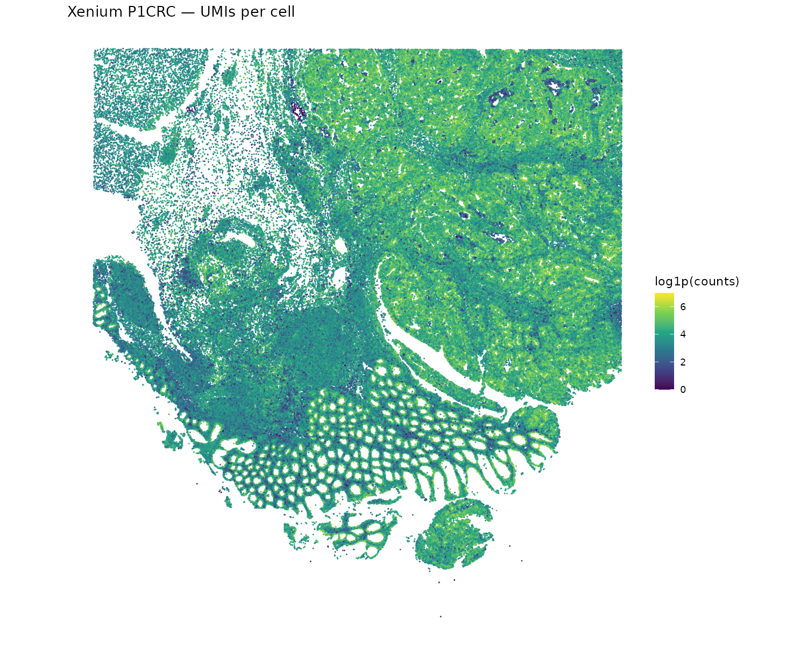
Hallazgos principales del estudio
Subpoblaciones de macrófagos:
- Pro-tumorales — dos subpoblaciones con perfiles distintos, localizadas en regiones tumorales específicas
- Anti-tumorales (SELENOP⁺ C1QC⁺) — colocalizados con células T clonalmente expandidas
Expansión clonal de T cells:
- Identificaron clonotipos expandidos de CD8⁺ T cells
- Estos T cells se localizan cerca de macrófagos anti-tumorales y células CEACAM5⁺ tumorales
Sólo posible con datos espaciales:
- scRNA-seq identifica los tipos celulares
- Visium HD revela dónde están y con quién interactúan
- Xenium valida a resolución subcelular
Lección metodológica:
Ninguna plataforma sola responde todas las preguntas. La integración de múltiples modalidades (Visium HD + Flex + Xenium) da el panorama completo.
Actividad práctica
Si quieren aquí o con mejor conexión. En laptop o en clústers (ken o fenix)
- Cargar
flex_annotated.rdscomo referencia- Pero sin tumor (Ver diapo: Preparando la referencia para RCTD)
- Cargar su objeto Visium HD procesado (de la clase 3, o pueden encontrarlos en mi carpeta de Ken)
- Ejecutar RCTD para deconvolucionar su paciente (con 16mum y 30 cores tarda alrededor de 2 horas, try as slurm job).
- Visualizar el mapa de tipos celulares en el espacio
- Comparar con los clusters de Banksy
Recursos computacionales
RCTD en modo doublet sobre ~500K bins puede tardar >60 minutos y requiere ~16 GB de RAM (el pull request de spacexr no parece haber ayudado). Si su laptop no lo soporta, usen los bins de 16 µm o la subregión (block) que seleccionaron en la clase anterior.
Referencias
Oliveira MF et al. (2025). High-definition spatial transcriptomic profiling of immune cell populations in colorectal cancer. Nature Genetics 57: 1512–1523. doi:10.1038/s41588-025-02193-3
Cable DM et al. (2022). Robust decomposition of cell type mixtures in spatial transcriptomics. Nature Biotechnology 40: 517–526. doi:10.1038/s41587-021-00830-w
Hao Y et al. (2024). Dictionary learning for integrative, multimodal and scalable single-cell analysis. Nature Biotechnology 42: 293–304. doi:10.1038/s41587-023-01767-y
Azimuth: azimuth.hubmapconsortium.org
spacexr/RCTD: github.com/dmcable/spacexr
Código del estudio: github.com/10XGenomics/HumanColonCancer_VisiumHD
OSTA Book: lmweber.org/OSTA
¡Gracias! La última clase es de ustedes
Taller de Transcriptómica Espacial — Clase 4